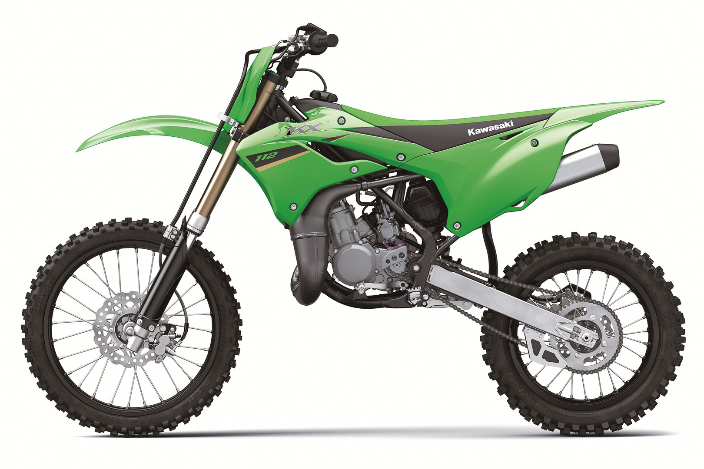

As one of the top mini-motocrossers in its class, the KX65 provides the potential for early riding success. With a high performing, liquid-cooled 64cc engine, the KX65 delivers the kind of high-end punch that you’d expect from a green machine, yet also aims to deliver strong low and mid-range performance with a wide, manageable powerband. Long travel suspension and front and rear disc brakes undoubtedly make the KX65 one of the best equipped bikes in its category.
